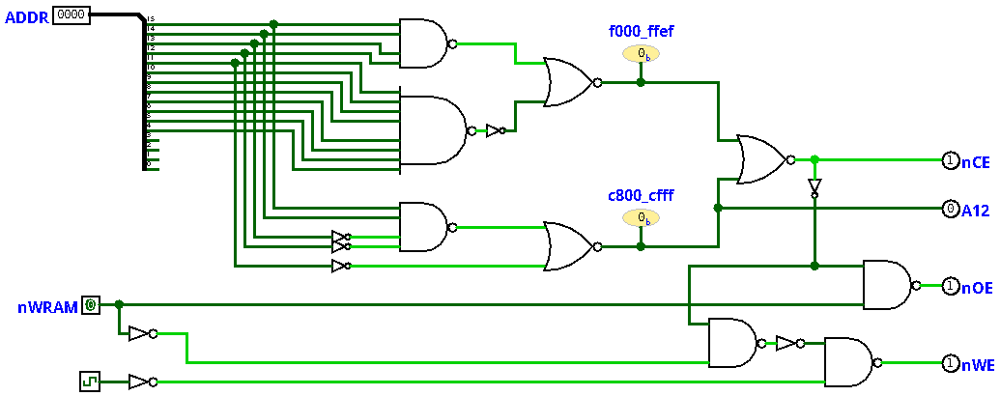

The 1MB extended RAM provides a large pool of storage for programs that need more space than the 20KiB of main RAM can offer. But using it requires discipline: before accessing an extended RAM address, you have to set the window register to point at the right page, do the work, and then restore the window register if other code might be relying on it. That overhead is perfectly acceptable when operating on large data sets, but it is awkward when all you need is a few hundred bytes of scratch space at a predictable, fixed address.
The expanded memory addresses this gap. It is a modest block of directly-accessible static RAM mapped into two otherwise unused regions of the address space, with no window registers, no page management, and no shared state to coordinate. It is always there, at the same addresses, and reading or writing it is no different from reading or writing main RAM.
The expanded memory is implemented as an AS7C164A 8Kx8 static RAM, mounted on the video card and main memory board alongside the dual-port RAM that provides the main memory and video framebuffer. Unlike the extended RAM, which routes accesses through a windowing scheme backed by a pair of 512KiB chips, the AS7C164A is wired directly to the address and data buses. When the address falls within one of the two expanded memory regions and the chip's /CE is asserted, it responds on the data bus just like any other memory on the system.
The expanded memory occupies two regions of the address space that were previously unused:
The AS7C164A has 13 address pins (A0-A12), giving it an 8KiB address space. The two CPU address regions map into this space as follows:
The full address decode logic is shown in the diagram below.

The decode logic generates two key signals: /C_RANGE, which is asserted (low) when the CPU address is in 0xc800-0xcfff, and a composite /CE that is asserted when the address is in either expanded memory region. These signals, along with /WRAM and the clock, feed the remaining control pins of the RAM.
Mapping two disjoint CPU address ranges into a single contiguous RAM chip requires some way of telling the chip which "half" of its address space is being accessed. Rather than connect CPU A12 directly to the chip's A12 pin, the decode logic drives A12 on the RAM with the /C_RANGE signal.
When the CPU is accessing 0xc800-0xcfff, /C_RANGE is low, so the chip sees A12=0. Combined with CPU A11-A0 wired directly to chip A11-A0, accesses in this range land in chip addresses 0x0800-0x0fff (since CPU A11 is always 1 throughout the 0xc800-0xcfff range). When the CPU is accessing 0xf000-0xffef, /C_RANGE is high, so the chip sees A12=1, and accesses land in chip addresses 0x1000-0x1fef. The chip's lower 2KiB (0x0000-0x07ff, where A12=0 and A11=0) is never selected by either address range and goes unused.
This approach means the bank selection happens entirely in the decode logic, without consuming an extra CPU address bit or requiring any software-visible configuration. From the software's perspective, 0xc800 and 0xf000 are simply two separate blocks of flat, directly-addressable RAM.
The AS7C164A uses separate /OE (output enable) and /WE (write enable) pins to distinguish read and write cycles, just like the extended RAM chips. Both signals are derived from the composite /CE and the CPU's /WRAM signal: